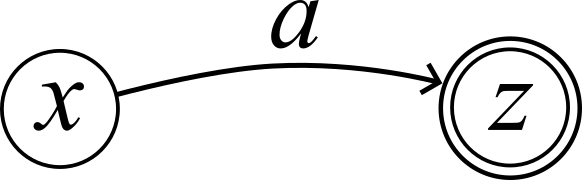
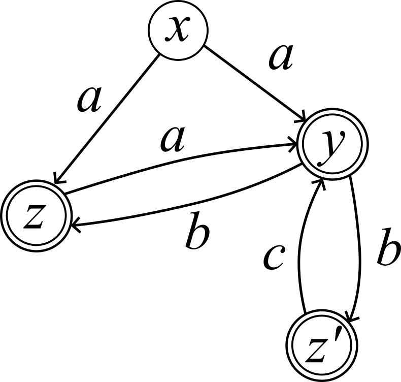
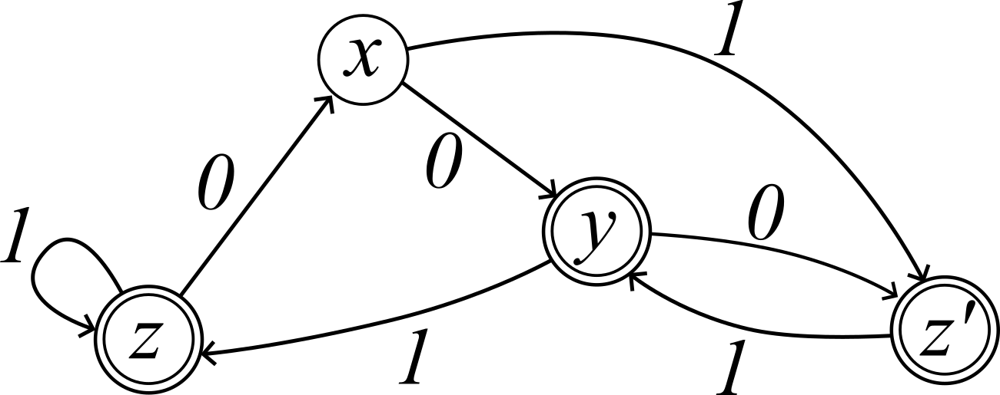

Last time, we saw that state diagrams were useful as compact representations of some top-down puzzle games like Sokoban and mazes. Our definition of "state diagram" was a bit informal, but that was actually for good reason: they are supposed to be useful pictures, not mathematical objects per-se. This section is about the formal definition of automaton and its consequences.
What do you mean by formal? Well, I'm so glad you asked. A formal definition is really a precise, unambiguous description (as in it cannot be interpreted in more than one way) of a mathematical object. The data of a formal definition consists of all of the components of the object it is defining. In our case, the mathematical object in question is a mathematical model of a computer called an automaton, and the data of the definition is contained in the bullet points below it.
Recall that a relation is a set of tuples, which are immutable finite lists (just like in Python). In the definition of automaton, the transition relation is a trinary relation, which means it consists of a set of triples \((x, a, y)\), immutable lists of length \(3\). Every automaton can be drawn visually using a state diagram, just the ones we drew in the previous section. Recall this example from last time:
Abstract state diagram (A) is a visual depiction of the automaton \(\mathcal A = (Q, A, \delta, F)\), where \[ \begin{aligned} Q &= \{s_1, s_2, s_3, s_4\} \\ A &= \{\Uparrow, \Rightarrow, \Downarrow, \Leftarrow\} \\ \delta &= \{ (s_1, \Rightarrow, s_2), (s_2, \Leftarrow, s_4), (s_2, \Downarrow, s_3), (s_3, \Uparrow, s_2), (s_4, \Rightarrow, s_2), \} \\ F &= \{s_2, s_3, s_4\} \end{aligned} \] Here, we have taken the final states of \(\mathcal A\) to be the winning states.
Just like before, an easy way to write down the transition relation of an automaton is using its transition table.
| \(\to\) | \(\cdots\) | \(a\) |
| \(\vdots\) | \(\vdots\) | |
| \(x\) | \(\cdots\) | \(\delta(x, a)\) |
Transition tables allow us to go back and forth between state diagrams and automata. For example, the transition table for abstract state diagram (A) (\(\mathcal A\) above) is below:
| \(\mathcal A_1\) |  |
| \(\mathcal A_2\) |  |
| \(\mathcal A_3\) |  |